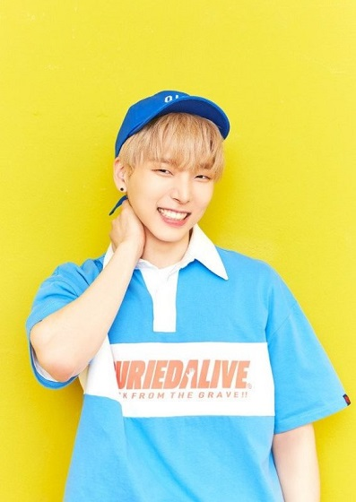

It’s your friendly neighbourhood kpop writer, Reporter S!
This article will be an introduction to ONEUS and an analysis of the themes in their debut trailer.
View the video below (view it two or three times! Go crazy!)
So, first up it’s important to note that ONEUS is going to be a kind of ‘brother group’ to another RBW rookie group, ONEWE.
ONEUS is set to be the idol group (sing, dance, be gorgeous) and ONEWE is set to be a band (play drums, play guitar, be gorgeous).
This kind of same-time-debut is not unique in Korean entertainment circles, and it immediately reminded me of when 2PM and 2AM debuted –
2PM was hyped to release dance music, and 2AM released ballads.
Also, the management company of ONEUS has really high standards – their two previous groups,
Mamamoo and Vromance have incredible vocals so we I’m sure we can expect excellence from ONEUS too.
So, In age-order, let’s introduce ONEUS
RAVN
Real name: 김영조, Kim Youngjo
Birthday: 1995.09.02
Ravn is the oldest member of ONEUS and is both a vocalist and member of the rap-line.
He appeared in the MV for Mamamoo’s Everyday back in March 2018 and he is also friends with JBJ’s Kenta.
Some fansites say that Ravn can speak fluent Japanese, but I’ve literally found one video where all he says is ‘thank you’ and ‘I love you’
(so if you guys can find one, please send us the link and we can share Ravn’s talents with the world!).
Finally, you can find him on Soundcloud – his channel is pls9ravn and he’s uploaded quite a few tracks and covers already. ^_^
Seoho

Real name: 이서호, previously known as 이건민 (Lee Geonmin)
Birthday: 1996.06.07
Seoho is a vocalist with ONEUS, and from some of the clips from Produce 101 and Mix9, you can tell why (he’s really a power vocalist in my opinion).
In Produce 101 (2016) and MIX9 (2017) he went by the name Geonmin, but it seems that for all of 2018 he has been using the name Seoho and that is the name he will debut with.
He has both ears pierced and well… he’s very curious and easily surprised. Watch this clip from ‘I will Debut’ and you’ll see what I mean.
Leedo
Real name: 김건학 (Kim Geonhak)
Birthday: 1997.07.26
Leedo is officially a rapper (but really he could just speak and I would melt) and he used to be a YG trainee.
There are a few videos of him from 2014 onwards floating around Youtube and he has a voice deeper than the Pacific Ocean.
Ugh, he’s beautiful. Another skill of this super talented and super-tall man is that he can choreograph –
check out ‘I Will Debut’ Episode 11 – and finally, he seems very attentive and caring to his fellow group members, particularly Xion, who is quite new to the idol training process.
Keonhee
Real name: 이건희
Birthday: 1998.06.27
Keonhee is the designated main vocal in ONEUS and is also the taller-half of the Keonhee-Hwanwoong duo.
The boys have been training together for a long time and it shows with how comfortable they are around each other, especially when shopping and cooking
(just watch Episode 2 of ‘I will debut’ and you’ll see what I mean. Keonhee and Xion are the members who are known to eat a lot,
and Keonhee’s catch-phrase for filling in empty space when no-one is talking is ‘Wa-bap’. Keonhee currently has a top bunk in the ONEUS dorm.
Hwanwoong
Real Name: 여환웅
Birthdate: 1998.08.26
Hwanwoong is the main dancer and a vocalist for ONEUS and he’s really close with Keonhee.
This is cute in its own way, because there is a bit of a height difference between them ,which is evident when they perform together.
I’ve seen one Korean site that says Keonhee is the tallest member at 180cm and Hwanwoong is the ’160-something fairy’
Hwanwoong has many talents, including piano, dancing (obviously) and music arrangement.
Xion
Real Name: 손동주
Birthday: 2000.01.10
Xion is a vocalist, and is relatively new to the idol training process.
Like Leedo he is quite tall and has a deep speaking voice, making him a real contrast to his non-identical twin brother, Dongmyeon
(who happens to be in Onewe!) On the RBW and ONEUS youtube videos we have seen that he currently has a top bunk,
and he wears Frodo pajamas! Even though he is really good looking, Xion does the most cringe-worthy wink-and-kiss aegyo in the history of kpop.
Well, that wraps up our profiles for ONEUS! Stay tuned for more info and articles on these super talented lads ^_^